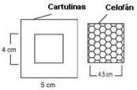
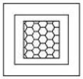

Práctica 24 :Analisís de Cationes por Vía Seca
Práctica 24 :Analisís de Cationes por Vía Seca
| Objetivo: |
Identificar la presencia de un determinado catión en una muestra, a través del color que la llama presenta al contacto con la referida muestra. |
| Material |
| Introducción: |
| Durante siglos el hombre ha estudiado la energía y la luz y ha propuesto varios modelos para explicar como la energía pasa de un lugar a otro. Una de las formas en que la energía viaja por el espacio es la radiación electromagnética. La luz es una forma de radiación electromagnética, que se caracteriza por su longitud de onda, por ejemplo las brazas calientes de un brasero, trasmiten la radiación electromagnética que asa la carne, un horno de microondas calienta los alimentos etc. también se sabe que un rayo de luz se comporta como paquetes de energía llamados fotones. El método de coloración a la flama solamente asegura resultados en el caso de que la muestra contenga un solo elemento, el cual da precisamente el color de la flama, lo que podemos pensar es que el calentar la muestra libera energía que puede excitar los electrones y proporcionarnos el color característico de cada elemento. A continuación se da una lista de la coloración de la flama LITIO ______________ ROJO INTENSO Antes de iniciar: ¿Porqué los metales dan coloración al someterlos a la flama de mechero? |
| Desarrollo Experimental: |
|
Experimento 1:
Si no se tiene alambre de platino se puede realizar esta práctica colocando en cápsulas de porcelana cada una de las sales junto con metanol y someterlas a la fama del mismo alcohol o de una manera demostrativa al iniciar su práctica para todo el grupo. |
| Resultados y Conclusiones : |
|
Completa la siguiente tabla con los datos encontrados Ver Cuadro 1 1) ¿Qué sucede cuando se suministra calor, a través de la llama, al elemento químico (en este experimento, el catión de sal)? 2) ¿Por qué se utiliza la zona oxidante de la llama para hacer el análisis de los cationes? 3) ¿Cómo se identifica el catión presente en la muestra en este tipo de experiencia? 4) ¿Dónde se utiliza este tipo de experiencia? 5) ¿Por qué es necesario limpiar la varilla a cada experiencia? 6) ¿A qué se le llama electrones de valencia? 7) ¿Qué es el espectro de emisión? 8) ¿La propiedad de la coloración a la flama se utiliza para fabricar juegos pirotécnicos? 9) ¿Qué nombre recibe la energía requerida para que un átomo pierda un electrón? 10) ¿Debido a la configuración del ultimo nivel energético, como se comportan los metales, respecto a sus electrones de valencia? 11) ¿Por qué los metales para poder colorear la flama deben estar en forma de cloruros? Comentarios: La energía producida en la zona oxidante de la llama del hornillo es suficiente para activar los electrones de ciertos cationes, haciendo-los saltar para niveles más energéticos. Los cationes al tener sus electrones activados se mueven en dirección a la zona reductora o a la zona neutra de la llama. Esto hace con que los electrones vuelvan a los niveles de energía que ocupaban antes, devolviendo la energía recibida en la zona oxidante bajo la forma de luz visible, cuya longitud de onda corresponde a un determinado color, y esa es la característica de la especie e catión. Entonces, se puede identificar la presencia de un determinado catión en una muestra por el color que la llama adquiere al contacto con la misma. Ese tipo de análisis es denominado de espectroscopia, que posibilita la identificación de un cierto número de elementos, por medio de ensayos por la coloración de la llama. Ese ensayo no es conclusivo, pero sirve como indicio y orientación de la investigación que posteriormente se vaya a emplear. La experiencia de la llama es una de las más rápidas y simples para identificar la presencia de determinados cationes. Es muy eficaz para iones metálicos como sodio, potasio, cobre, bario y otros. De esa forma, se hace fácil determinar evidencias de sulfato de cobre en frutas, pues éste es identificado por la coloración verde-intensa producida en la llama; sodio y potasio en la sandía, que trasmitirán a la llama coloración amarilla y violeta, respectivamente. El color de los fuegos artificiales se debe a la presencia de los elementos sodio (amarillo), estroncio (rojo), bario (verde) y cobre (verde azulado), agregados durante su fabricación. La prueba de identificación de cada elemento será positiva, si los colores concordasen con los del cuadro 2. Para obtener un material simple que substituya el vidrio de cobalto, sobreponga dos pedazos de papel celofán, de acuerdo con el Esquema 1. Cuadro 2. Resultado positivo de la experiencia de la llama. ESQUEMA 1: |
| Figura 3: Esquema |
|  |
| Figura 4: Celofán fijo entre dos cartulinas formando un filtro del color deseado |
|  |